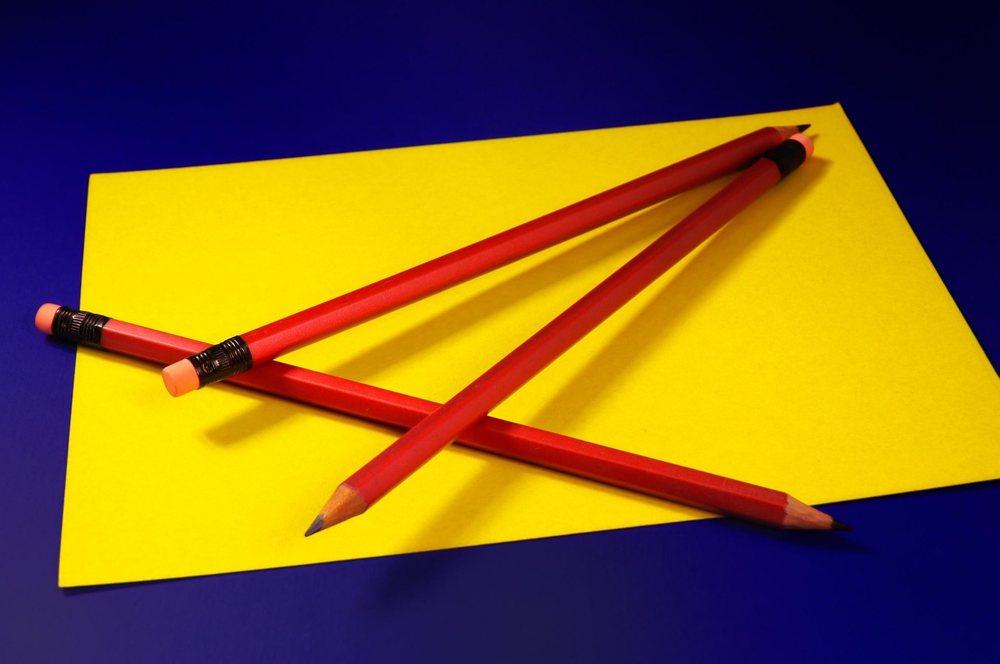

Hello Miner! Your aim is to get the key for the lock,
while you are going lower and lower in the mine.
But be careful! You have to avoid the obstacles.
The first problem you encounter is that you can't even get into the mine because the entrance is blocked by a
stone.
To open it, you have to solve this:
Which two colors will make a gold one?
Taken from a mine and cased in wood, I’m never set free, though used as I should. I’m not burned for heat nor worn with pride, Yet I leave my mark where thoughts reside. What am I?

- 